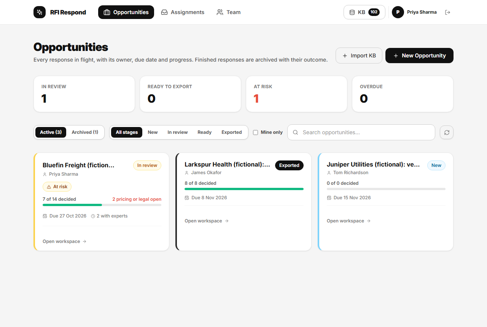
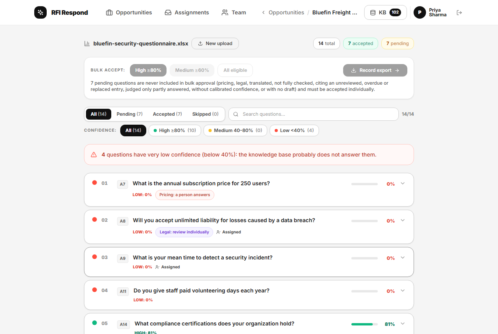
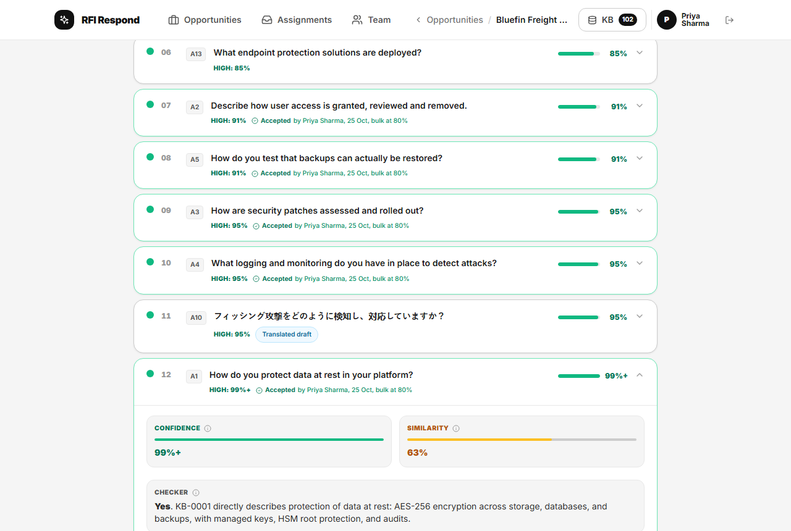
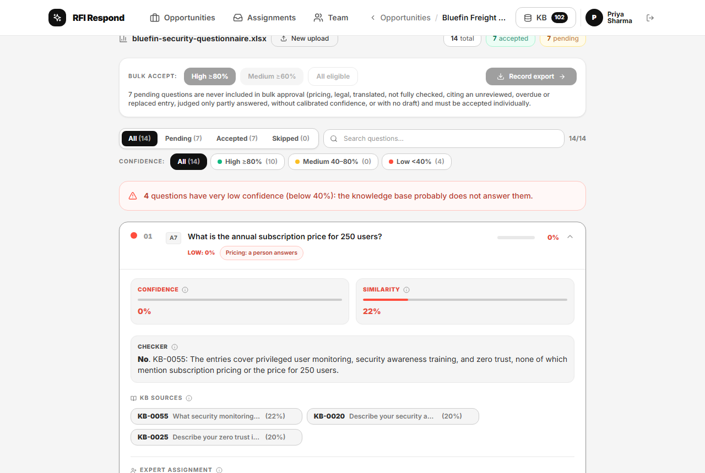
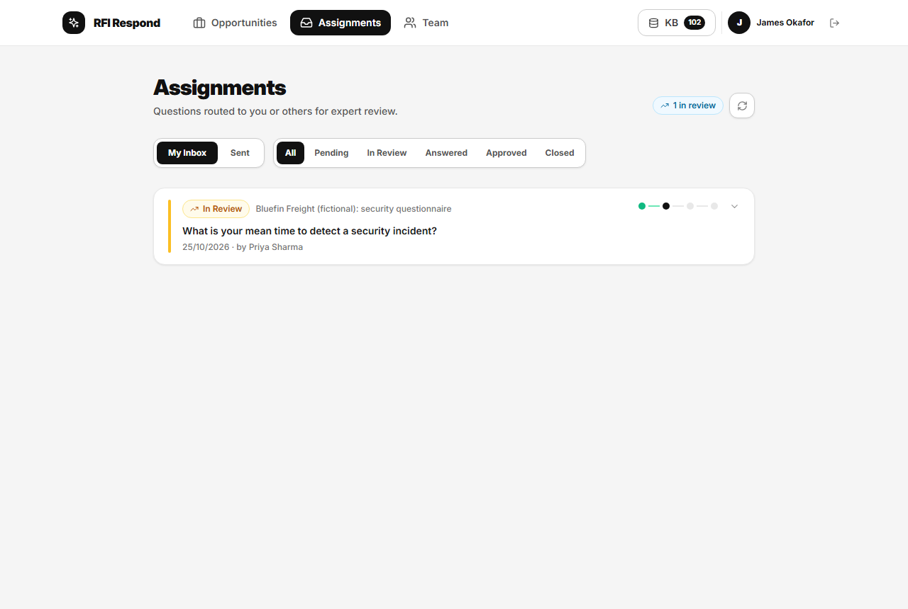
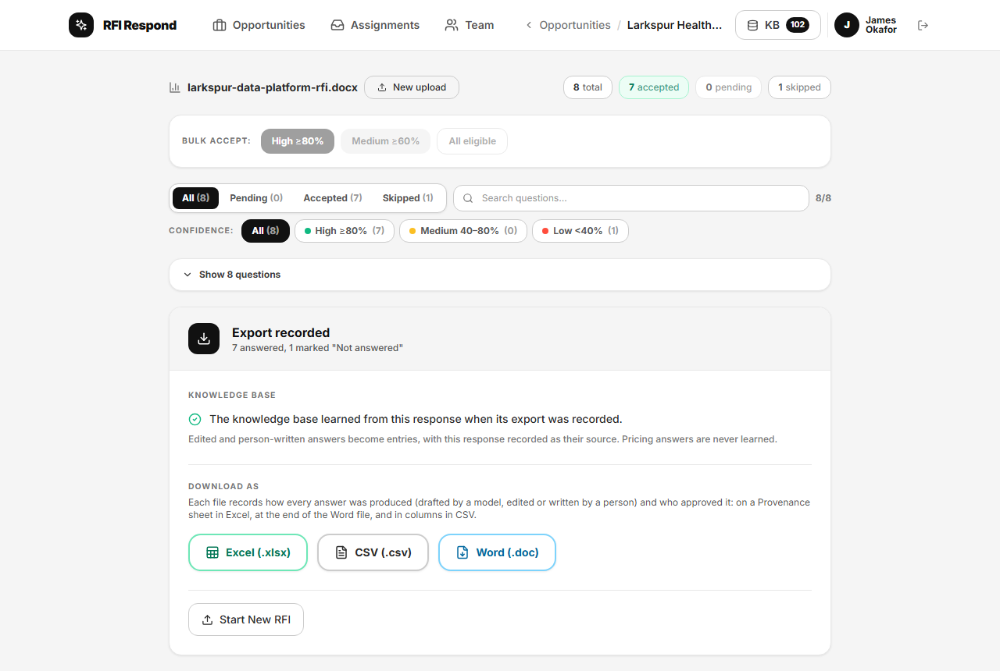
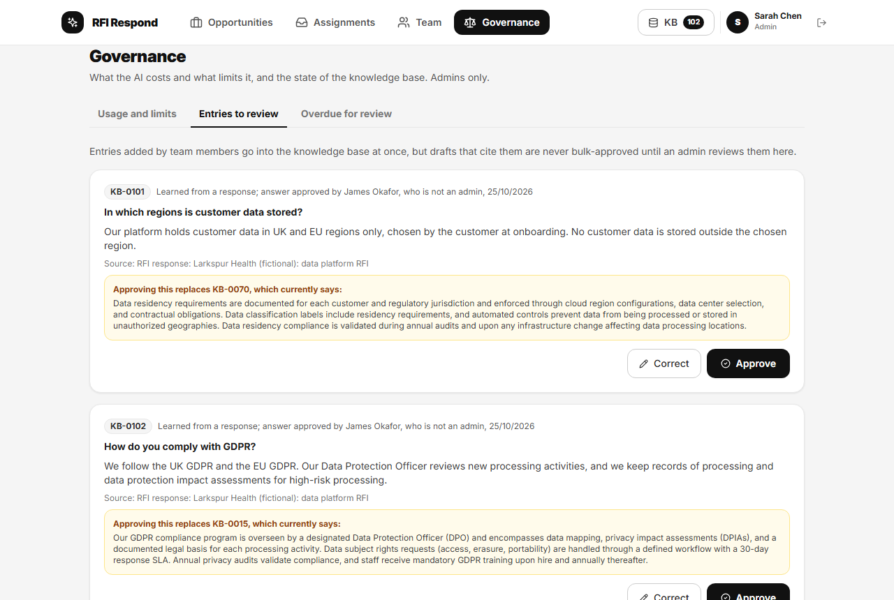
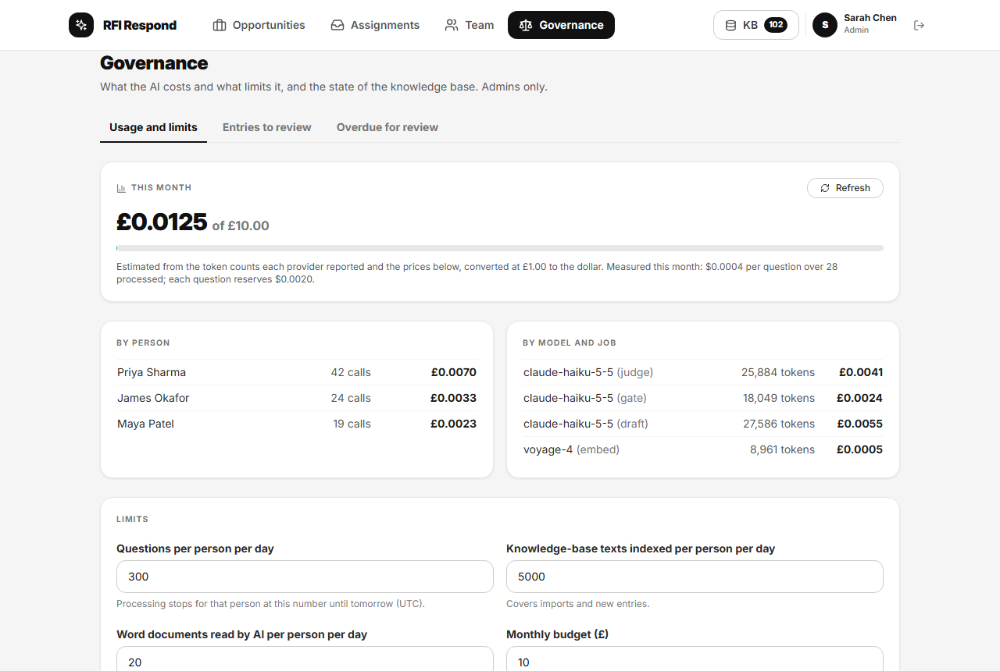

RFI Respond, screen by screen
RFI Respond answers procurement questionnaires from an organisation's own knowledge base. This walkthrough follows one response through the tool and marks four things on each screen: what the AI does, where a person decides, the guardrails, privacy, and security design, and how each part was tested. Use the filter to follow one thread at a time; select a numbered marker to find its note.
Every screen shows the synthetic demo data in the repository. Company names are fictional, and the drafts were recorded from a real run of the pipeline.
- Every response in flight
- Review, lowest confidence first
- A draft, its confidence, and its reason
- A question the model is not allowed to answer
- An expert's inbox
- Export, and what the knowledge base learned
- Entries waiting for an admin
- Cost, models, and limits
- How it was tested
Every response in flight
The starting screen shows every response the organisation is working on, with its owner, due date, and progress, and flags the ones at risk.

Swipe the screenshot sideways to see all of it.
- 1Human in the loop
A named owner and a due date. Each response belongs to one person, who decides what is sent. The card flags it as at risk when it is within three working days of its due date with less than 80% decided, or due tomorrow with questions only a person can answer still open.
- 2Guardrails, privacy, and security
Work only a person can do, counted. "2 pricing or legal open" are questions the tool will never answer or approve on its own, so the overview shows them as outstanding until someone does.
- 3Guardrails, privacy, and security
Archived, never deleted. Finished responses are kept, with their outcome, as a record of what was sent. Only an admin can permanently delete one, and only one created in error, giving a reason that is written to an audit log.
- 4Guardrails, privacy, and security
Synthetic data only. Every company, person, and answer here is fictional, written for the demo. No real questionnaire, policy, or customer data is in the repository.
Review, lowest confidence first
Questions are processed on the server and listed with the least certain first, so a person's attention goes where it is needed most.

Swipe the screenshot sideways to see all of it.
- 1Human in the loop
Bulk approval, as a recorded decision. The owner can accept every question above a chosen threshold in one action. It is still a person's decision, recorded with who made it, when, and at what threshold.
- 2Guardrails, privacy, and security
What bulk approval can never include. Pricing, legal, and translated questions; anything not fully checked; drafts citing an unreviewed, overdue, or replaced entry; a "partly" verdict; and anything without calibrated confidence or a draft. The database enforces this, not just the screen.
- 3AI capability
The tool says when it does not know. Calibrated confidence below 40% means the knowledge base probably does not answer the question, so the tool says so in plain words.
- 4How it was tested
The gate was tested before it was trusted. Rules and a classifier together caught 100 of 100 pricing and legal questions in the evaluation set. 7 of 70 harmless lookalikes were held by mistake, an error that falls on the side of a person.
- 5Guardrails, privacy, and security
Legal questions are always individual. A question that would commit the organisation legally or contractually is flagged and always reviewed one at a time, whatever its score.
- 6Human in the loop
Routed to an expert. Questions the owner cannot answer are assigned to a colleague, who sees them in their own inbox (screen 5).
A draft, its confidence, and its reason
Each answered question carries a calibrated confidence, the raw similarity, and the checker's verdict with a one-sentence reason.

Swipe the screenshot sideways to see all of it.
- 1Human in the loop
Who approved it, when, and how. Every accepted answer records the person, the date, and the method: here, a bulk approval at the 80% threshold.
- 2AI capability
Japanese questions, answered from English knowledge. Matching works across languages: the right entry came back in the top five for every Japanese test question asked against English entries. The draft is written in Japanese.
- 3Guardrails, privacy, and security
Translations are always reviewed. A translated draft is labelled as such and never bulk-approved; it is accepted one at a time by a person.
- 4AI capability
Confidence that means what it says. The figure is calibrated on the evaluation set: the measured chance the knowledge base answers the question. It is shown as "99%+" at the top, never as certainty.
- 5AI capability
Similar is not the same as answered. Raw similarity is shown alongside (63% here), because an entry on the same topic is not necessarily an answer. That is why there is a checker.
- 6AI capability
The checker's verdict and reason. A separate Claude call reads the matched entries and says whether they answer the question, yes, partly, or no, with a reason a person can check.
- 7How it was tested
Calibration, checked out of sample. Five-fold cross-validation gave a calibration error of 0.047, and no near miss (on topic, but not answered) reached the 80% bulk line: 0 of 33.
A question the model is not allowed to answer
A pricing question is caught before drafting. There is no draft to approve, and the checker explains why the knowledge base does not cover it anyway.

Swipe the screenshot sideways to see all of it.
- 1Guardrails, privacy, and security
Pricing is never drafted. Pricing is never drafted, never bulk-approved, and never learned into the knowledge base, because prices go stale and are the organisation's to set.
- 2AI capability
A plain reason, even for a "no". The checker names the entries it read and why none of them answers the question.
- 3AI capability
The entries that were considered. The closest entries and their similarity are listed, so a person can see what the tool looked at before deciding.
- 4How it was tested
Attacked with gate evasion. The red team tried to get pricing questions past the gate, in English and Japanese, by disguising or instructing around them. All were held.
An expert's inbox
Questions routed to a specialist arrive in their own inbox, with the response they belong to and who asked.

Swipe the screenshot sideways to see all of it.
- 1Human in the loop
The right person, suggested. When the owner assigns a question, the tool suggests colleagues from their stated expertise and from who wrote or approved the entries the question draws on.
- 2Human in the loop
Tracked to the end. Each assignment moves from pending to answered to approved, so the owner can see what is still waiting on someone.
- 3Guardrails, privacy, and security
Each person sees their own work. Who may read or change what is enforced in the database for every role, so the rules hold even if someone calls the API directly.
Export, and what the knowledge base learned
Recording the export sends nothing to the customer. It produces the files the owner sends, and it is the moment the knowledge base learns.

Swipe the screenshot sideways to see all of it.
- 1AI capability
The knowledge base learns from each response. Edited and person-written answers become new entries, linked to the response they came from, so the next questionnaire starts from better material.
- 2Guardrails, privacy, and security
Learning with limits. Pricing answers are never learned. An answer that would replace an existing entry, or one added by a member who is not an admin, waits for an admin's review (screen 7).
- 3Human in the loop
Provenance in every file. Each export records how every answer was produced (drafted by a model, edited, or written by a person), with which model and prompt version, and who approved it.
- 4How it was tested
Spreadsheet formula injection, tested. Excel cells are written as text, and CSV cells that start with a formula character are neutralised, so a planted formula never runs. A red-team case tried it.
Entries waiting for an admin
Because the knowledge base learns, it is also the obvious target for a bad answer. Changes from members wait here until an admin approves or corrects them.

Swipe the screenshot sideways to see all of it.
- 1Guardrails, privacy, and security
A control against poisoning. Entries added by members go in at once, but drafts that cite them are never bulk-approved until an admin reviews them.
- 2Human in the loop
Where each entry came from. Every entry shows its source and who approved the answer it came from, so the reviewer knows what they are looking at.
- 3Guardrails, privacy, and security
What it would replace, side by side. An answer that would supersede an older entry shows that entry in full, so nothing is overwritten unseen. Replaced entries stay readable with their history.
- 4Human in the loop
Approve or correct. The admin approves the entry or corrects it first. Entries also fall due for review 12 months after they were last checked.
- 5How it was tested
The replacement threshold was measured. A sweep chose the similarity above which an answer may replace an entry: wrong replacements came to 1.9% of test questions (7 of 363), against a bar of 2%.
Cost, models, and limits
Admins see what the AI costs, which model does which job, and the limits that stop spend running away.

Swipe the screenshot sideways to see all of it.
- 1AI capability
Four jobs, one small model. Claude Haiku 5.5 checks, classifies, and drafts; voyage-4 (or a local model on the local PC) matches by meaning. Every call is recorded with its tokens and cost.
- 2Guardrails, privacy, and security
A monthly budget. Processing stops for everyone when the month's estimated spend reaches the budget. Each question reserves its cost before it runs, so the cap holds under load.
- 3Guardrails, privacy, and security
Daily limits per person. Questions processed, entries indexed, and Word documents read by AI each have a daily limit per person.
- 4Guardrails, privacy, and security
Admins only. This page, and every admin action, is restricted by the database's access rules, which are tested as real users for every role.
- 5How it was tested
Caps and roles, tested in the database. 231 database tests run every role against the access rules, approvals, learning, review, and caps, as real signed-in users.
How it was tested
The green notes above show where each part was tested. These are the tests behind them. Every figure is an estimate on small synthetic sets, with a 95% interval in the repository's evaluation reports.
Prompt injection, 37 attacks
Questions and knowledge-base entries are text written by other people, so they are passed to the model as data, never as instructions. The red team planted instructions in 32 questions (each with a clean twin) and 5 entries.
Does the faithfulness judge catch a lie?
Drafts were judged faithful to their sources, but a judge that has only seen faithful drafts proves little. So unsupported claims were planted into 95 faithful drafts to see whether it would notice.
Result. Caught 95 of 95, with no false alarms on the 37 unchanged drafts. The plants came from four fixed rules, so a model's own mistakes may be harder to spot.Files are treated as untrusted
Spreadsheets and Word documents are opened in the browser with size and decompression limits. The tests include a zip bomb, a macro-enabled .docm file, a file renamed to .docx, and a script tag hidden in the text.
Result. All refused or kept as plain text. Four Word documents carrying planted instructions changed nothing in the questions found.Every role, as a real user
Every rule on who may read or change what lives in the database, so it holds even with the public key in an attacker's hands. CI also searches the built app for any key that should not be there.
Result. 231 database tests, run against row-level security as real signed-in users, alongside 643 unit tests.Code reviewed by something that did not write it
From Sprint 2 onwards, a separate AI agent that had not seen the reasoning reviewed each sprint's changes for security and correctness.
Result. In Sprint 9 it found one high, two medium, and five low findings, all fixed before the planted-claims run. Findings are fixed with a test, or recorded as a residual and added to the backlog.Measured, with what did not pass
Every published figure has a 95% interval and comes from an evaluation that can be re-run with one command.
Result. Calibration error 0.047 and 0 of 33 near misses at the bulk line. The checker still changes its verdict for 7.2% of questions when asked again, against a bar of 5%; that residual is accepted because only 1.7% crossed the bulk line.The full case study (PDF) ↓The evaluation reports on GitHub ↗The safety techniques behind it →